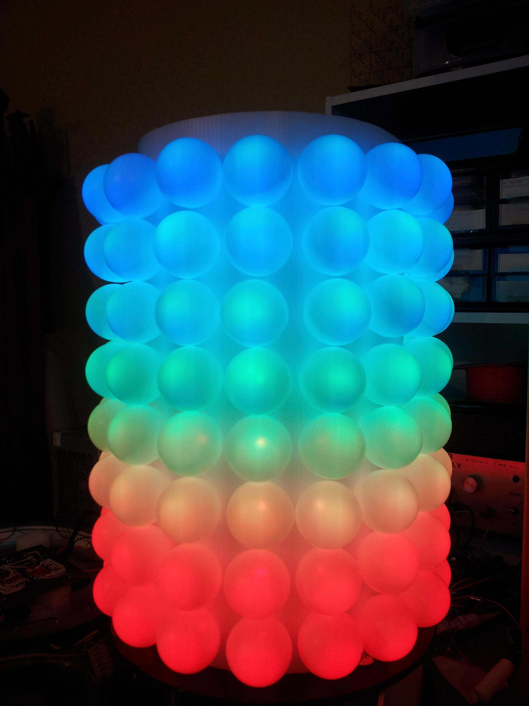
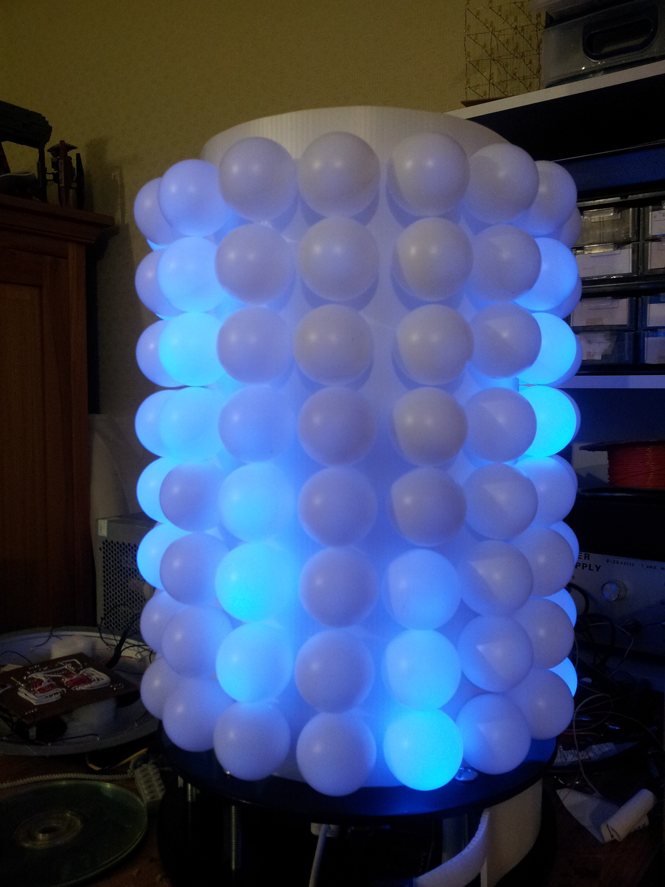

What is the LED Cylinder
The cylinder was a hacking project I build over about year. It consists of 128 RGB LEDs arranged in a cylinder of 16 x 8, with each LED covered by a ping-pong ball to create diffuse light.
Showing graduated colours:  Showing rain animation: Hardware
The cylinder is powered by a Parallax Propellor microcontroller which uses 6 TLC5940 LED driver chips to actually drive the LEDs. The cylinder is controller using a Nintendo Nunchuck, connected via I2C, and an 16x2 LCD display.
What's in this repository?
This repository contains:
- Eagle schematics file for the hardware
- Source code for the microcontroller, which is a mix of Propeller's "spin" language and assembly language.